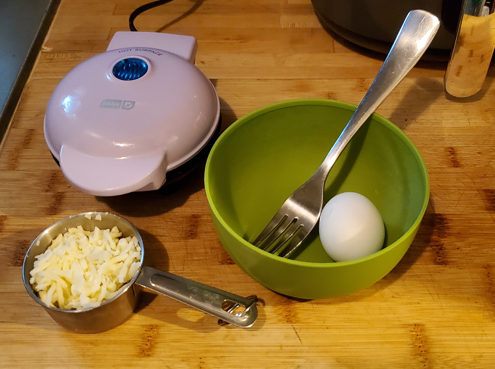
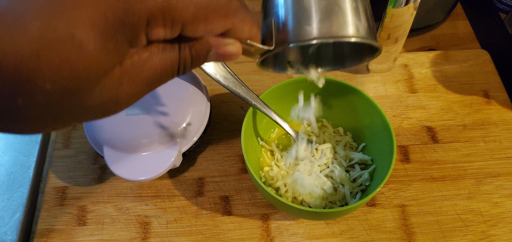
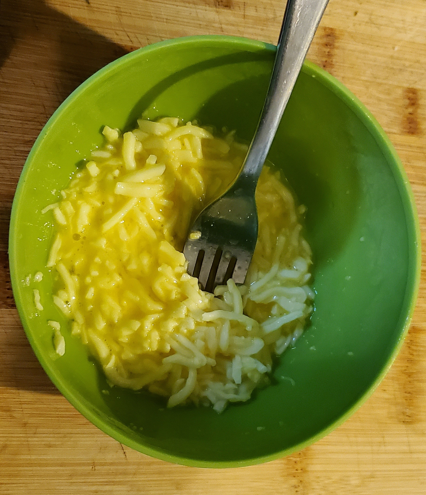
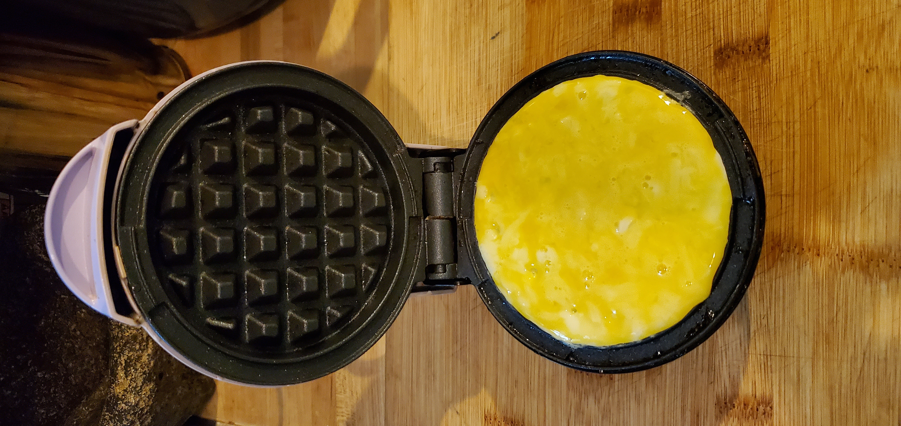
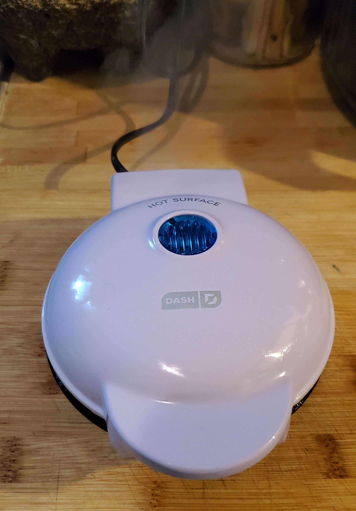
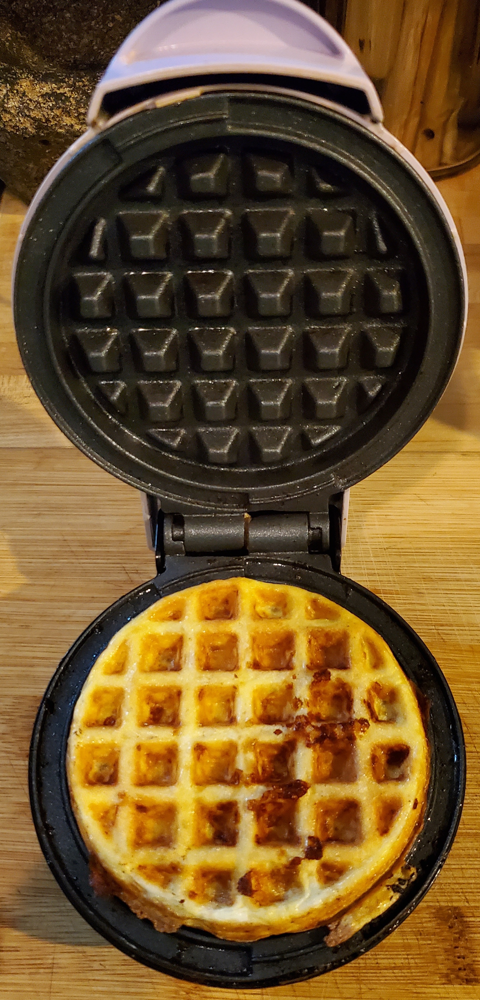
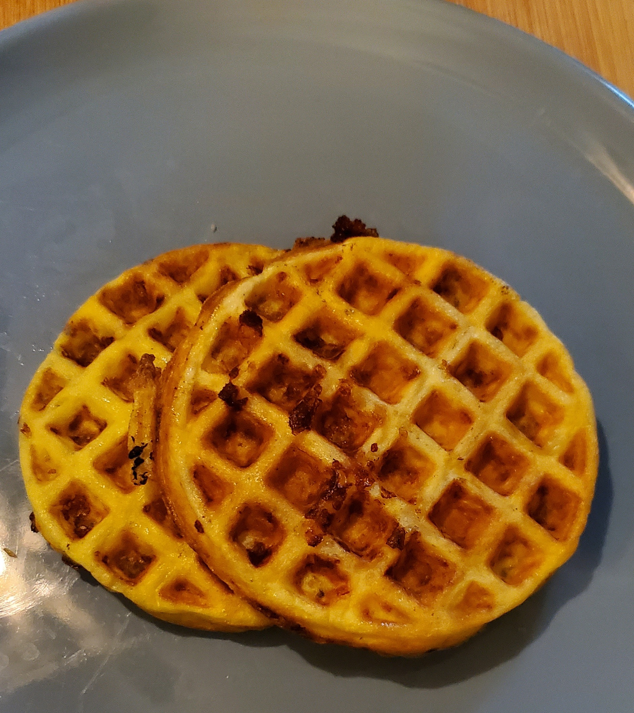

Eating better doesn’t have to mean giving up everything you enjoy. These recipes are simple and tasty! They are healthy, low-carb, and built for real life. Each of these are quick to make, filling, and actually satisfying. Perfect if you’re trying to lose the “dad bod”, want a "tastes guilty" late-night snack, or just want to try something new.
This isn’t about strict dieting or eating like a bodybuilder. It’s about making smarter choices that you can stick with. Like what you eat when no one is watching. The base recipe for a chaffle only uses two ingredients, an egg and some shredded cheese. You can add other stuff to adjust to your craving. But a chaffle in its natural glory is a great canvas to start with!

The only tools you need are a bowl, a fork, and a waffle maker.
Preheat the waffle maker for 5 minutes. I use a Dash Mini Waffle Maker because that’s what I have!
Crack the egg into the bowl and throw away the shells. Use the fork to lightly whisk the egg in the bowl.

Add the shredded cheese and mix until all the cheese is covered in egg.

Add half of the mixture to the waffle maker.

Let the mixture cook for 3 to 5 minutes.

Take it out once you feel it looks browned or crisp enough to your liking. Then, add the remaining mixture and let that cook for 3 to 5 minutes.

Take that last waffle out. Add your desired toppings or use it however you want to. I often use them as a replacement for bread.

Here are the comparisons between a chaffle and a standard slice of white bread:
One slice of white bread typically contains about 70 calories, 1 gram of fat, 12 grams of carbohydrates, 1 gram of sugar, and 2 grams of protein.
Each of those chaffles that we just made contain about 120 calories, 6 grams of fat, 4 grams of carbohydrates, 0 grams of sugar, 7 grams of protein, plus Vitamin A, Vitamin D, Vitamin B12, Choline, Iron, Selenium, and Omega-3. And they taste great too!
Mozzarella works best for sweet variations. For more savory dishes, I use often cheddar or colby jack. You can also add ¼ cup of almond flour to any of these recipes if you desire a more firm or bready consistency.
Tsp = teaspoon
Tbsp = tablespoon
For sweet french toast chaffles, use mozzarella and add ½ tsp of ground cinnamon, a dash of pure vanilla extract and 1 tsp of monk fruit extract before mixing it altogether.
For indulgent chocolatey dessert chaffles, use mozzarella and add 1 tbsp of cocoa powder, a dash of pure vanilla extract and 1 tsp of monk fruit extract before mixing it altogether.
For savory Italian cheesy bread chaffles, use ¼ cup of mozzarella and add 1/4 cup of grated Parmesan cheese, 1/2 tsp garlic powder, and 1/2 tsp Italian seasoning before mixing it altogether.
For jalapeno popper chaffles, use cheddar cheese and add 1 tsp of cream cheese, and 1 tsp of diced jalapenos before mixing it altogether.
For buffalo chicken chaffles, use either cheese but add 1 cup of shredded chicken, 1 tbsp buffalo wing sauce and 1/4 tsp garlic powder before mixing it altogether.
For BBQ burger bun chaffles, use colby jack cheese and add 1 tsp of BBQ sauce, and 1/4 tsp onion powder before mixing it altogether.
BONUS! This is one of my favorites! I call this “The Un-Chaffle”! For a non-dairy version, I mash up a ripe banana instead of using cheese, add an egg, 1 tsp of ground cinnamon, and a dash of pure vanilla extract. Then, I mix it all together. I like these with peanut butter smeared all over them!